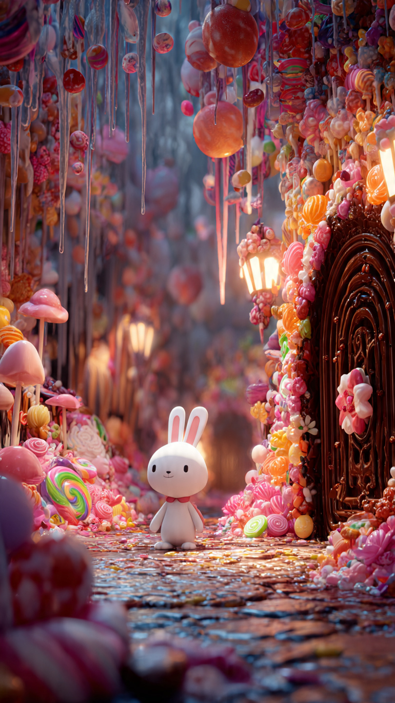
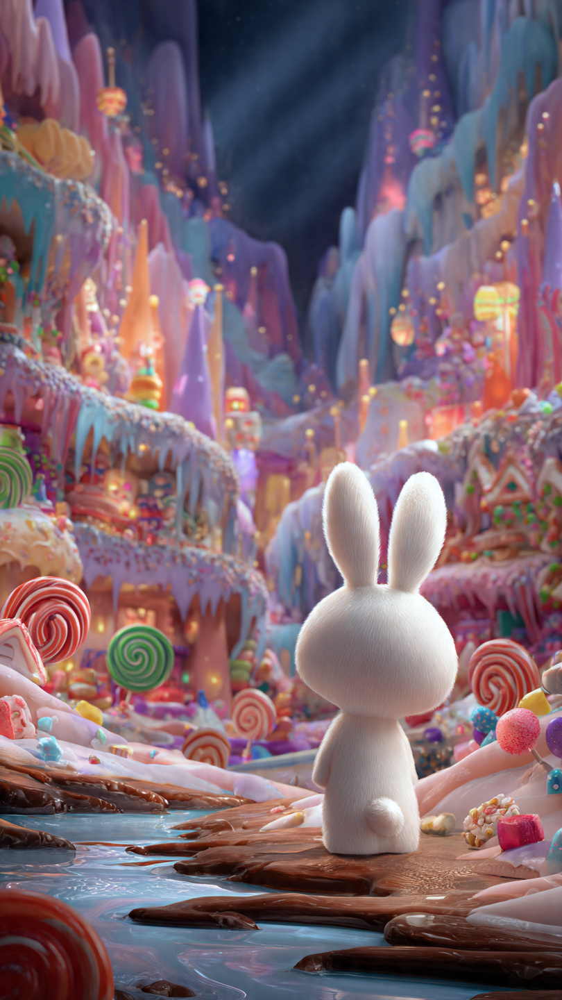

```html
🐰 الأرنب الذي وجد بابًا إلى عالم الحلوى | قصص أطفال
```
في صباحٍ جميل، خرج الأرنب الصغير رورو يقفز بين الزهور وهو يغني بسعادة.
كان يحب استكشاف الغابة أكثر من أي شيء آخر، وكان دائمًا يقول:
"كل يوم يحمل مغامرة جديدة!"
وفي ذلك اليوم، قرر أن يذهب إلى جزء من الغابة لم يزره من قبل.
كانت الأشجار هناك أطول من المعتاد، وأوراقها تلمع بألوان غريبة.
وفجأة...
لاحظ رورو شيئًا عجيبًا بين جذور شجرة ضخمة.
كان هناك باب صغير مصنوع من الحلوى!
إطاره من الشوكولاتة، ومقبضه من السكر، وعلى أعلاه لافتة مكتوب عليها:
"ادخل إذا كنت تحب المفاجآت!"
اقترب رورو بحذر.
طرق الباب ثلاث طرقات.
وفجأة...
فتح الباب وحده!
وانبعثت منه رائحة لذيذة من الفانيليا والفراولة والشوكولاتة.
نظر رورو إلى الداخل، فوجد طريقًا مرصوفًا بالبسكويت، وأشجارًا تحمل المصاصات بدلًا من الثمار.
وكانت الغيوم في السماء تشبه غزل البنات.
لم يصدق عينيه.
قفز إلى الداخل وهو يضحك.
وبمجرد أن عبر الباب...
اختفى الباب خلفه!
نظر حوله بدهشة.
وسمع صوتًا لطيفًا يقول:
"مرحبًا بك في عالم الحلوى..."
"لكن تذكّر..."
"ليس كل ما هو حلو... آمنًا."
شعر رورو بالفضول، وبدأ يسير في ذلك العالم العجيب، دون أن يعرف أن مغامرته الحقيقية لم تبدأ بعد.
📷 الصورة رقم 1

بدأ رورو يتجول في عالم الحلوى، وكلما سار خطوة اكتشف شيئًا أكثر روعة.
كانت الأنهار تجري بعصير الفراولة، والجبال مصنوعة من الشوكولاتة، والزهور تنثر حبات السكر الملونة في الهواء.
وفجأة، سمع صوت بكاء خافت.
تتبع الصوت حتى وجد دبًا صغيرًا يجلس بجوار شجرة من أعواد الحلوى.
قال رورو بلطف:
"لماذا تبكي؟"
أجاب الدب:
"ملكة الحلوى فقدت عصا السعادة، ومن دونها بدأت الحلويات تذوب وتختفي."
نظر رورو حوله، ولاحظ أن بعض الأشجار بدأت تفقد ألوانها، وأن قطع الحلوى الجميلة أصبحت تذوب ببطء.
قال بحماس:
"إذن علينا أن نبحث عن العصا!"
وانطلق الصديقان في رحلة داخل الغابة السكرية.
مرّا بجسر من الكراميل، وتسلقا تلًا من الكعك، حتى وصلا إلى كهف كبير مصنوع من الشوكولاتة الداكنة.
داخل الكهف وجد رورو صندوقًا ذهبيًا صغيرًا.
فتح الصندوق بحذر...
لكنه لم يجد العصا.
بل وجد خريطة مرسومًا عليها نجمة كبيرة.
وفي أسفلها عبارة تقول:
"لن يجد العصا إلا من يشارك الآخرين ولا يفكر في نفسه فقط."
ابتسم رورو وقال:
"الآن فهمت... هذه ليست رحلة للبحث فقط، بل لاختبار القلب الطيب."
ثم حملا الخريطة، وانطلقا نحو النجمة المرسومة عليها، بينما كانت مفاجأة كبيرة بانتظارهما.
📷 الصورة رقم 2

اتبع رورو والدب الصغير الخريطة حتى وصلا إلى حديقة مليئة بأزهار ملونة تتلألأ كالجواهر.
وفي وسط الحديقة كانت تقف فراشة ذهبية جميلة.
ابتسمت لهما وقالت:
"لقد نجحتما في الاختبار."
تعجب رورو وسأل:
"أي اختبار؟"
أجابت الفراشة:
"كان بإمكانك أن تستمتع بعالم الحلوى وحدك، لكنك اخترت مساعدة صديق يحتاج إليك. ولهذا أثبتَّ أن قلبك طيب."
رفرفت الفراشة بجناحيها، وفجأة ظهر صندوق صغير من الكريستال.
فتح رورو الصندوق، فوجد داخله عصا السعادة تلمع بألوان قوس قزح.
أسرع بها إلى قصر ملكة الحلوى.
وعندما أمسكت الملكة بالعصا، أضاءت السماء بألوان زاهية، وعادت الأشجار مليئة بالحلوى، وامتلأت الأنهار بالعصائر اللذيذة من جديد.
وقف جميع سكان عالم الحلوى يصفقون بسعادة، وشكروا رورو على شجاعته وطيب قلبه.
وقبل أن يعود إلى منزله، قدمت له الملكة هدية صغيرة.
كانت قطعة حلوى على شكل قلب.
وقالت له:
"هذه القطعة لن تنتهي أبدًا، لكنها تصبح ألذ كلما شاركتها مع الآخرين."
ابتسم رورو، وودع أصدقاءه، ثم عاد عبر الباب السحري إلى الغابة.
ومنذ ذلك اليوم، صار يحكي لكل أصدقائه أن أجمل شيء في الدنيا ليس كثرة الحلوى...
بل مشاركة الخير مع من نحب.